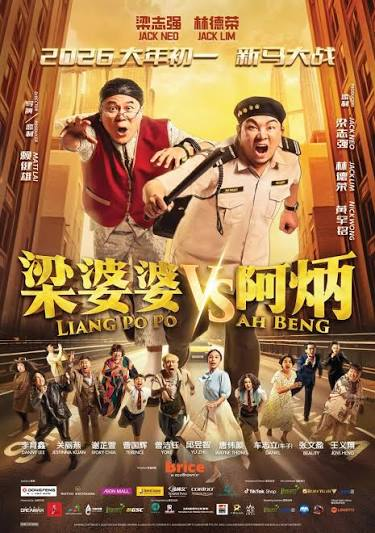
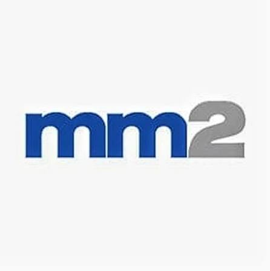
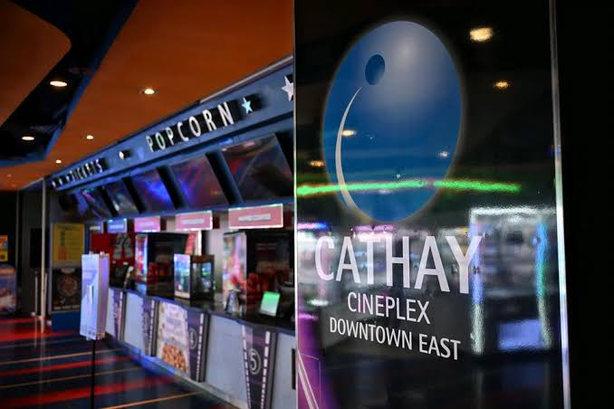
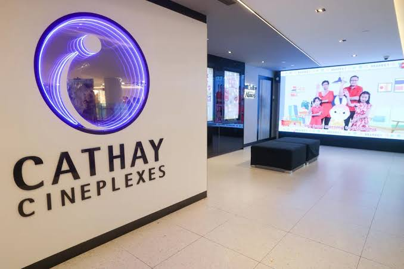

Founder-led since 2008
Melvin Ang founded the business in Malaysia and remains executive chairman and interim CEO. mm2 listed on Catalist in 2014 and moved to the Mainboard in 2017.
Strategy and commercial review · SGX: 1B0
A restructuring case before a business case.
mm2 proved Singapore audiences will pay for local stories. It did not prove that those stories could carry cinemas, leases and acquisition debt. The remaining question is whether a content studio can survive the balance sheet built around it.


00 · Evidence · Research score
mm2 sits deep in the Fragile band. Franchise films and regional distribution still have value, but capital deficiency, unaudited accounts and court protection impose the scoring ceiling.
Fragile · sensitivity range 14-22.
This measures business quality and future potential. It is not a target price or trading recommendation.
mm2 scores below every covered peer because insolvency conditions zero out most financial and resilience components.
Known local franchises and overseas revenue lift the score. Insolvency, suspended trading and weak cash conversion hold it back.
| Component | Weight | Rating /5 | Points | Assessment |
|---|---|---|---|---|
| Five-year revenue CAGR | 6 | 0 | 0.0 | -50% a year, FY2022-26. |
| Net profit margin | 7 | 0 | 0.0 | Losses every year; median margin -64%. |
| ROIC / ROE | 9 | 0 | 0.0 | Negative returns; equity of -S$219.6m. |
| Cash-flow stability | 9 | 1 | 1.8 | Free cash flow positive in at most two of five years. |
| Balance-sheet strength | 9 | 0 | 0.0 | Capital deficiency and a court moratorium. |
| Component | Weight | Rating /5 | Points | Assessment |
|---|---|---|---|---|
| Brand recognition | 2 | 3 | 1.2 | Known local franchises and five-market reach. |
| Competitive advantage | 7 | 1 | 1.4 | Franchise library, little capital to exploit it. |
| Market share | 4 | 0 | 0.0 | Cinema share fell from about 27% to zero. |
| Customer relationships | 5 | 0 | 0.0 | Content revenue fell 99% in FY2026. |
| Geographic reach | 2 | 4 | 1.6 | No country exceeded 40% of FY2025 revenue. |
| Component | Weight | Rating /5 | Points | Assessment |
|---|---|---|---|---|
| Industry growth | 6 | 2 | 2.4 | Entertainment and media grows, but exhibition is smaller. |
| Technology adoption | 4 | 1 | 0.8 | Digital platforms closed; no new capability disclosed. |
| New-market expansion | 6 | 1 | 1.2 | The group is leaving markets, not entering them. |
| Revenue diversification | 5 | 1 | 1.0 | Content is the only continuing business. |
| Strategic partnerships | 4 | 2 | 1.6 | Binding placement, with approvals pending. |
| Component | Weight | Rating /5 | Points | Assessment |
|---|---|---|---|---|
| Economic resilience | 3 | 0 | 0.0 | Insolvency and emergency financing. |
| Customer diversification | 4 | 2 | 1.6 | Not disclosed, so rated 2 by rule. |
| Technology resilience | 3 | 2 | 1.2 | Not disclosed, so rated 2 by rule. |
| Regulatory resilience | 2 | 3 | 1.2 | CPF charges and Rule 1303(3) disclosure. |
| Operational resilience | 3 | 1 | 0.6 | Founder as interim CEO; three-person board. |
01 · Exhibit · The group
mm2 finances, produces and distributes Chinese-language films and series. Between 2015 and 2017 it added post-production, concerts and cinemas. By 2026 the screens were liquidated, the lender held the concert business and content was again the core.
Local franchises and Greater China platform demand.
Pre-sales and co-producers fund work; revenue is booked on delivery.
Receivables, leases and S$195m of borrowings absorbed the economics.
S$73.5m of content EBITDA in FY2023-25 became only S$14.4m of group operating cash.
The investment case changed twice: first from a studio into an integrated entertainment group, then from an integrated group into a court-protected content company. Both transitions matter when reading historical revenue.
Melvin Ang founded the business in Malaysia and remains executive chairman and interim CEO. mm2 listed on Catalist in 2014 and moved to the Mainboard in 2017.
Films and series are financed, produced and licensed to cinemas, streamers and broadcasters. China, Taiwan and Hong Kong provided 51% of FY2025 revenue.
Cinemas and concerts increased revenue but added rent, tour risk and debt. The continuing group is now almost entirely content, without the former downstream businesses.
Pre-sales, co-producers and IMDA grants can lower the capital mm2 must put at risk before a release.
Production once connected to Vividthree's post-production; the studio now has to buy or partner for more of the chain.
The original thesis was to keep more of each ticket. The outcome shows the lowest-margin step added the most fixed cost.
Source review pages 4-6 and 12. FY2025-26 figures are unaudited where noted.
02 · Exhibit · Portfolio
The supplied imagery spans the two sides of the case: culturally familiar films that can attract an audience, and cinema infrastructure whose economics collapsed when admissions fell.
Why it matters: familiar characters and language can still create differentiated local demand.

Why it matters: S$230m bought 64 screens, but shrinking admissions turned strategic integration into fixed-cost exposure.

Why it matters: owning the screen did not protect cash when rents and debt remained fixed.
The Ah Boys to Men series shows that local characters can compound audience memory across sequels.
China, Taiwan and Hong Kong supplied more than half of group revenue before the collapse.
Cathay closed its remaining cinemas on 1 September 2025, eight years after acquisition.
At the FY2025 peak the portfolio looked diversified. Economically it was concentrated: content generated more than all group EBITDA, while concerts swung into loss and cinemas sat outside segment revenue as an associate.
| Business | FY2025 position | 2026 status | Economic signal |
|---|---|---|---|
| Content | 66.5% of revenue; S$24.7m EBITDA | Continuing | The only profitable core, but FY2026 revenue fell to S$1.1m. |
| Concerts / UnUsUaL | 31.9% of revenue; -S$9.0m EBITDA | Lost to UOB in Mar 2026 | A S$27m EBITDA swing in one year exposed event volatility. |
| Cinemas | S$79.9m associate loss | Liquidated Sep 2025 | The S$230m acquisition ended with no screens and S$117.6m goodwill written off. |
| Digital / Vividthree | Deconsolidated associate | About 23% stake by Aug 2026 | The post-production link survives only as a minority interest. |
Source review pages 6-10 and mm2 FY2025-26 results.
03 · Evidence · Segment economics
Two-thirds of FY2025 revenue came from content, but it generated more than all group EBITDA. Concerts erased part of that contribution and cinema losses sat outside the segment result.
Content's 22.5% EBITDA margin supported the group; concerts swung from +24.2% to -17.2% in one year.
| Segment | FY2024 revenue | FY2025 revenue | FY2024 EBITDA | FY2025 EBITDA | FY2025 margin |
|---|---|---|---|---|---|
| Content | 115.1 | 109.8 | 24.9 | 24.7 | 22.5% |
| Concerts & events | 74.3 | 52.6 | 18.0 | -9.0 | -17.2% |
| Digital | 7.1 | - | -0.8 | - | - |
| Others | 2.3 | 2.7 | -0.5 | 0.1 | 4.5% |
| Group | 198.7 | 165.1 | 40.2 | 15.8 | 9.6% |
Two-thirds of revenue and more than all EBITDA came from content. The rest of the portfolio diluted rather than diversified earnings.
Concert EBITDA moved from +S$18.0m to -S$9.0m on S$21.7m less revenue, showing the cost of tour and promotion risk.
As associates, the cinemas cost S$79.9m in FY2025 without appearing in group revenue or segment EBITDA.
S$ million. Source review pages 11-13; FY2025 results were unaudited.
04 · Evidence · Financials
FY2024 marked peak revenue and margin. A year later group margin fell to 10.4%; by FY2026 revenue was only S$4.7m and accumulated losses had reached S$485m.
Revenue recovered through FY2024; FY2025 margin collapsed, and FY2026 reversed much of the profit and asset value booked before it.
Other current assets, including contract costs, collapsed between March 2025 and March 2026.
FY2026 credit-loss charges cut receivables from S$99.5m to S$48.8m.
The FY2026 loss mostly reversed past profits and capitalised costs, so it cannot be treated as a run-rate loss.
| Period | Revenue | Gross profit | Gross margin | EBITDA | Net loss* | Operating cash |
|---|---|---|---|---|---|---|
| FY2022 | 76.6 | 12.6 | 16.4% | 5.4 | -35.0 | n/d |
| FY2023 | 133.4 | 28.2 | 21.1% | 24.5 | -119.7 | 8.9 |
| FY2024 | 198.7 | 52.9 | 26.6% | 40.2 | -5.7 | 4.9 |
| FY2025 | 165.1 | 17.1 | 10.4% | 15.8 | -105.2 | 0.6 |
| FY2026 | 4.7 | -133.8 | n/m | n/m | -206.3 | -4.2 |
S$ million except margins. *Attributable to owners. FY2025-26 results were unaudited.
Cost of sales carried the largest FY2026 charge as older productions and contract costs were written down.
Collections failed behind reported revenue, reducing the remaining asset base available to creditors.
Overheads, impairments, discontinued operations and interest were partly offset by fair-value gains, tax and other items.
05 · Evidence · Cash and creditors
All S$195.4m of borrowings were secured, S$145.1m were current and payables had risen to S$132.2m. The question is no longer refinancing on ordinary terms; it is how value is divided through the scheme.
Secured debt ranks ahead of ordinary holders; the proposed scheme pays unsecured creditors mostly in equity.
Only S$14.4m of operating cash came from S$80.5m of EBITDA in FY2023-25, an 18% conversion rate.
| Creditor | Claim | Status | Why it matters |
|---|---|---|---|
| UOB | S$74.6m demanded | Secured lender; took UnUsUaL shares | Already enforced collateral while the moratorium was in place. |
| Bondholders | Over S$63m | Exchangeable and convertible bonds | Large unsecured class central to scheme approval. |
| Linkwasha | S$7.35m plus interest | Cathay-related creditor | The only creditor to oppose the moratorium. |
| Film investor | S$6.3m | High Court claim | Shows project-level claims can reach the operating subsidiary. |
| Cinema landlords | S$2.6m, S$0.8m and more | Claims under Cathay guarantees | Closed venues left liabilities at the parent. |
| Standard Chartered | S$0.9m | Demand under guarantees | Another claim linking old subsidiaries to the group. |
S$14.4m of operating cash against S$80.5m of group EBITDA in FY2023-25.
FY2026 finance cost on only S$4.7m of revenue; just S$0.9m was paid during the year.
Trade and other receivables remaining after S$42.1m of credit losses.
Source review pages 16-17. FY2026 results were unaudited and creditor claims can change through the scheme process.
06 · Decision · Restructuring
The proposed transaction offers unsecured creditors about 28 cents per dollar instead of an estimated 0-2.55 cents in liquidation. Existing holders retain less than 28.6% before further debt conversion and a possible rights issue.
Protection for mm2 and mm2 Entertainment while linked schemes are pursued.
Claims and guarantees are released in exchange for scheme consideration.
16.34bn shares at S$0.000918: S$11.5m for debt, S$3.5m for working capital.
SGX must accept a resumption proposal before the long-stop date.
The placement price is 69.4% below the last trade and values the enlarged company at about S$21m.
No new money; shares delist.
S$15m placement plus up to S$10m rights issue.
The same recapitalisation, then a cash-producing slate.
The first placement agreed in July 2025 lapsed. The current plan must pass four constituencies in sequence; failure at any gate risks liquidation or prolonged suspension.
| Date | Event | Economic meaning |
|---|---|---|
| 30 Jun 2024 | Cathay closes AMK Hub | The screen network contracts to 43 Singapore screens. |
| 27 Mar 2025 | Cathay JEM closes | A landlord takes back the site as fixed-cost pressure intensifies. |
| 1 Sep 2025 | Last Cathay cinemas close | The S$230m integration thesis ends in liquidation. |
| 7-11 Nov 2025 | UOB demands S$74.6m; shares suspend | The group seeks court protection and loses normal market access. |
| 10 Dec 2025 | High Court grants moratorium | Enforcement is paused while restructuring is pursued. |
| 9 Mar 2026 | MMRA term sheet; UOB takes UnUsUaL | The proposed rescuer arrives as another operating asset leaves. |
| 16 Jul 2026 | S$15m placement agreement | Most future equity moves to the new investor. |
| 18 Sep 2026 | Creditor meetings allowed; waiver granted | The plan advances, but votes and SGX approval remain outstanding. |
Class approvals are required for the compromises and releases to bind creditors.
The massive placement and change in control require votes with conflicted parties excluded where applicable.
Even a sanctioned scheme does not itself restore trading; the exchange must accept the resumption proposal.
Source review pages 18-20; [2025] SGHC 251 and mm2 placement announcements. Dates and terms remain subject to the live restructuring process.
07 · Evidence · Market and demand
Singapore box office roughly halved from 2019. Golden Village increased share while Cathay fell to zero, confirming that exhibition rewards scale. The surviving opportunity is upstream: franchise sequels, regional co-productions and licensing.
Admissions fell from 18.5m to 7.7m. Fixed rents were signed for the larger audience and did not shrink with it.
Greater China platform budgets drive series commissions, but revenue appears only after production and acceptance.
Four Ah Boys to Men films show that familiar local characters retain market power even as overall admissions fall.
Concert demand can be strong, but mm2 no longer controls UnUsUaL after UOB enforced its share charge.
| Company | Year | Revenue | Operating margin measure | Net margin | Profitable? |
|---|---|---|---|---|---|
| mm2 Asia | FY26 | S$4.7m | n/m | n/m | No |
| UnUsUaL | FY26 | S$43.6m | Gross 3.6% | -20.9% | No |
| Golden Village owner | FY25 | HK$673m | Gross 66% | 8.4% | Yes |
| PPB film / GSC | FY25 | RM682m | Pre-tax 10.1% | - | Yes |
| CJ CGV | FY25 | KRW2.28tn | EBITDA 16.7% | -6.3% | No |
| Cinemark | FY25 | US$3.12bn | EBITDA 18.6% | 4.4% | Yes |
| Live Nation | FY25 | US$25.2bn | Adjusted op. 9.4% | 2.0% | Yes |
Golden Village and GSC remained profitable; smaller Singapore and Malaysia cinema chains closed.
Local franchises and Greater China distribution remain differentiated assets if they can be funded without new leverage.
The last-traded market value carried S$195m of debt and no longer corresponds to the post-scheme ownership or business perimeter.
08 · Decision · Strategic frameworks
Production sits between powerful platforms, talent and fickle audiences. Exhibition then added landlords, fixed rent and substitutes; live entertainment added artist economics and lumpy demand.
Regional studios and streamer originals compete for attention; Golden Village dominates local exhibition.
A handful of platforms buy series and pay after delivery; audiences choose film by film.
Star directors, artists and landlords all command terms that a smaller balance sheet cannot easily resist.
Production needs little fixed capital but scarce financing; exhibition requires scale and real estate.
Streaming, short video, games and live events compete for the same evening and discretionary dollar.
The content-only restructuring retreats to the one stage where mm2 had a differentiated franchise library and positive segment economics.
Franchises, local-language know-how and grants gave mm2 its only durable pricing power.
Cinema EBITDA margin was already below the group in FY2018 before S$79.9m of FY2025 associate losses.
Concert EBITDA margin swung across one year, exposing the lumpy economics of tours and promotion.
IMDA co-funding lowers project capital, while Greater China approvals gate a market worth 51% of FY2025 revenue.
S$15.9m of finance costs stood against S$4.7m of FY2026 revenue; leases signed for 2019 audiences outlasted them.
Streaming and short video reduced cinema visits, but Malaysian films took 36.5% of local admissions in 2025.
Digital platforms expand distribution while compressing theatrical windows; production tools lower costs for rivals too.
The court moratorium, schemes, guarantees, CPF charges and SGX Rule 1303(3) shape every operating decision.
Cinema closure reduces the energy-heavy part of the group; no current emissions data was found.
Illustrative cinema EBITDA = revenue - 67.5% fixed costs - 20.2% variable costsA 10% revenue fall cuts EBITDA by about 65%; a 20% fall turns it negativeThis is an illustration, not Cathay's accounts. It explains why a moderate audience shock can create a disproportionate loss in exhibition.
Costs are committed before audiences decide; sequels and pre-sales can lower but not remove hit risk.
Rent, staff and utilities remain payable whether ten people attend or a hundred.
Interest falls due on schedule while film revenue and receivables arrive late.
Source review pages 26-30. The fixed-cost model is illustrative and is not a reconstruction of Cathay's private accounts.
09 · Decision · Risk matrix
Select a risk to inspect its trigger and mitigation. Labels state probability and impact so meaning is not dependent on red or green colour.
| Risk | Probability / impact | How economics are damaged | Leading indicator | Primary mitigation |
|---|---|---|---|---|
| Scheme or EGM fails | Medium / Very high | Liquidation produces almost no recovery for holders. | Creditor and whitewash vote tallies | Creditor support and committed new money |
| No trading resumption | Medium-high / High | Equity remains untradeable and harder to raise. | SGX reply to the resumption proposal | Meet all placement and resumption conditions |
| Unpaid receivables | High / High | More write-downs leave less cash for a slate. | Credit losses and ageing | Deposits and pre-sales before filming |
| Thin working capital | Medium-high / High | S$3.5m may not fund enough projects to restart. | Monthly cash and project starts | Rights issue, grants and project finance |
| Concentrated control | Medium / Medium-high | One group becomes lender, creditor and owner. | Terms of related financing | Independent adviser and shareholder votes |
| People and legal | Medium / Medium | Founder dependence, CPF charges and guarantees impede recovery. | Court outcomes and board changes | Scheme releases and independent oversight |
FY2025 and FY2026 results were neither audited nor reviewed, closing ordinary bank-credit channels.
The board said in November 2025 it could not demonstrate that the group remained a going concern.
The board had contracted after independent directors and the chief restructuring officer left.
Part-payments were ordered by the State Courts; talent trust matters to a studio built on project crews.
The incoming owner is already linked to the rescue financing, increasing the need for independent advice.
Only about 46% of weighted evidence is audited or independent.
10 · Decision · Strategy and outlook
No operating strategy matters until the scheme closes. After that, projects should be funded by deposits, pre-sales or grants; growth without cash conversion would rebuild the same problem.
Win creditor, EGM and whitewash votes, complete the placement and resume trading.
Fund only work backed by deposits, platform pre-sales or public grants.
Prioritise sequels, library licensing and co-productions; avoid screens and tours.
Publish audited accounts, receivable ageing and project-level cash disclosure.
Interactive restructuring scenario
Scheme completes as proposed and trading resumes if SGX agrees.
Mostly new shares
Before rights and debt swap
S$3.5m for working capital
Content revenue needed to cover S$15.9m of interest at FY2025's 22.5% segment margin.
Each tenth of the S$48.8m receivable balance not collected consumes about a third of the new working capital.
Existing holders' share after the placement, before debt conversion and any rights issue.
| Outcome | Bear | Base | Bull |
|---|---|---|---|
| New money | None | S$15m placement plus up to S$10m rights | The same, then cash from a new slate |
| Unsecured creditors | 0-2.55c per dollar | About 28c, mostly new shares | Above 28c if the shares rise |
| MMRA / Hildrics | - | About 71% before swap and rights | Control of a recovering asset |
| Existing holders | Approximately nil | Under 28.6% | Small stake in a larger viable company |
| What must go right | - | Scheme, EGM, waiver and SGX approval | Profitable projects that also produce cash |
Votes, sanction and SGX acceptance must all complete before valuation can move beyond liquidation logic.
For a full year, operating cash should at least match reported EBITDA.
An unmodified opinion and project-level cash reporting would replace assumptions with evidence.
Beyond Our Gallery scenarios based on court materials and the July 2026 placement announcement. This is not company guidance.
Local franchises and Greater China distribution show mm2 can create content audiences remember.
Five years produced S$472m of losses, a S$219.6m capital deficiency and court protection.
Creditor votes, EGM, waiver, SGX resumption and whether the first post-scheme projects produce cash.
The score rises only after the scheme, audit and a cash-producing slate. It falls if the plan fails, trading cannot resume or the remaining receivables are written down.
Sources and evidence
Evidence grade C. About 46% of weighted evidence is audited or independent; FY2025-26 results were neither audited nor reviewed.
Research standard
Figures are in Singapore dollars unless stated. Data are as of 3 November 2026. This is independent research for education, not an investment recommendation or price target.
Company and film imagery was supplied with the research brief and is presented as editorial portfolio evidence.